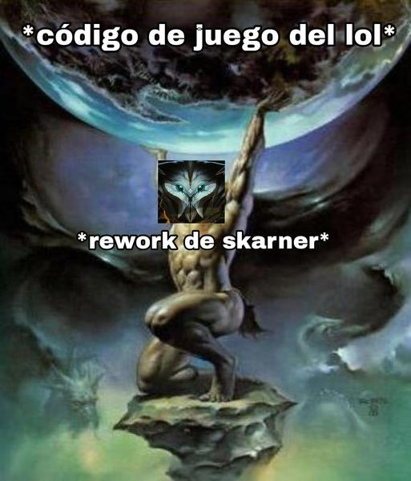
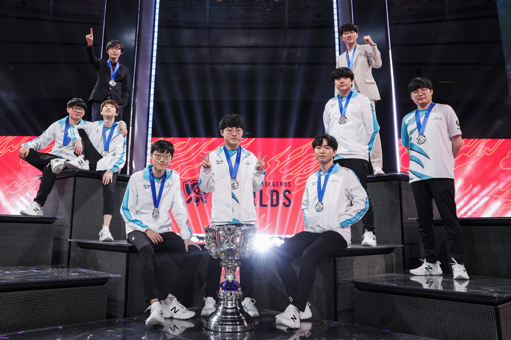
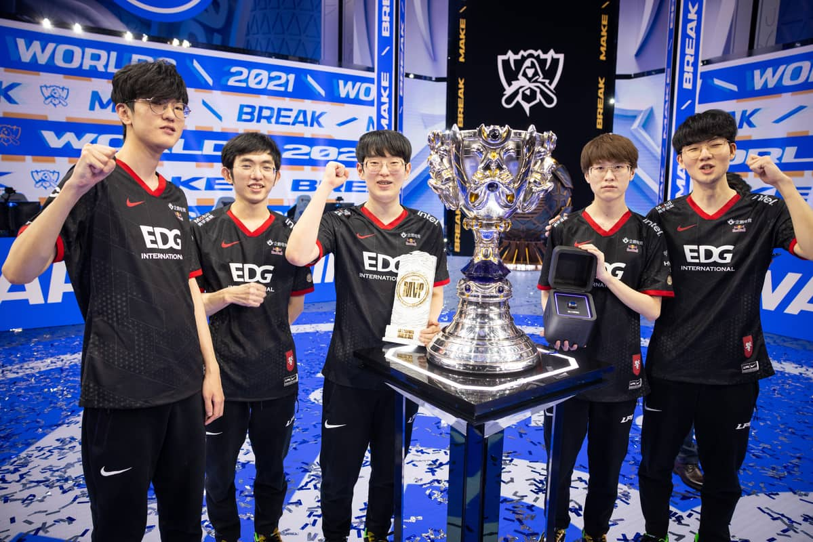
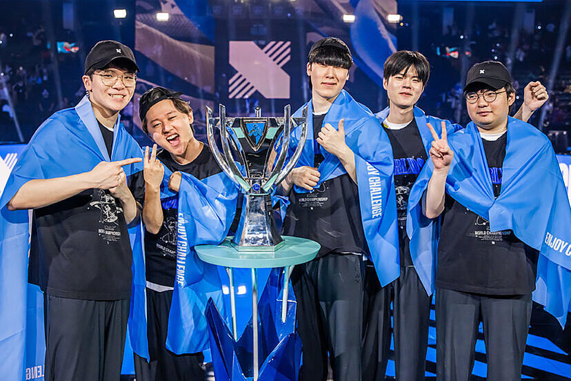
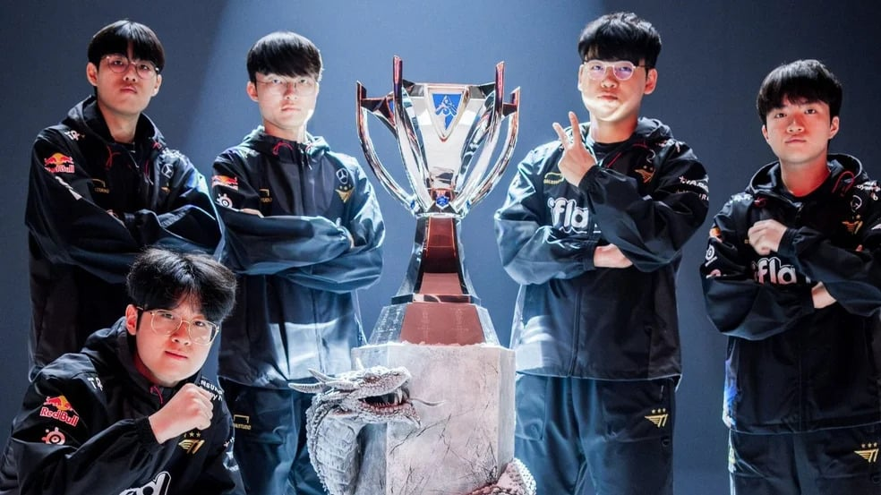

League of Legend
¿Qué es League of Legend?

League of Legends es un juego de estrategia en tiempo real (RTS, por sus siglas en inglés) desarrollado por Riot Games. Su lanzamiento en 2009 marcó el inicio de una nueva era en el género MOBA (Multiplayer Online Battle Arena), y desde entonces ha consolidado su posición como uno de los videojuegos más populares y jugados en todo el mundo. Con millones de jugadores activos diariamente y un ecosistema competitivo a nivel global, League of Legends ha trascendido el ámbito del entretenimiento digital para convertirse en un fenómeno cultural, con importantes campeonatos mundiales, como el World Championship, que atraen a una audiencia masiva. La combinación de acción rápida, estrategia profunda, y un enfoque centrado en el trabajo en equipo son algunos de los factores que han hecho de este juego un éxito duradero.
Tecnologías detrás de League of Legends
El desarrollo de League of Legends no solo se basa en la creatividad en términos de diseño de personajes y mecánicas de juego, sino también en el uso de tecnologías avanzadas que permiten la ejecución eficiente del juego a gran escala. Uno de los aspectos más cruciales del desarrollo de cualquier videojuego es el motor de juego, que es la base técnica que hace que el juego funcione. En el caso de League of Legends, el motor principal fue desarrollado principalmente en C++, uno de los lenguajes de programación más potentes y versátiles disponibles. C++ es ampliamente utilizado en la industria de los videojuegos, ya que permite una gestión precisa de los recursos del sistema, como la memoria y el procesamiento, lo cual es esencial para ofrecer un rendimiento óptimo, especialmente en juegos competitivos en línea donde cada milisegundo cuenta.
C++ también tiene la capacidad de compilar código para diversas plataformas, lo que facilita que League of Legends se ejecute en una amplia gama de dispositivos. Esta característica ha permitido que el juego esté disponible tanto para Windows como para macOS, garantizando una experiencia de juego fluida en una variedad de entornos de hardware.
Otros lenguajes y tecnologías utilizados
Aunque C++ es la columna vertebral del motor del juego y del cliente, Riot Games emplea una serie de lenguajes y tecnologías adicionales para gestionar los diferentes aspectos del ecosistema de League of Legends. Dado que este tipo de juegos en línea requieren de una infraestructura robusta para manejar servidores, bases de datos, estadísticas de usuarios, y actualizaciones constantes, se hace necesario el uso de múltiples herramientas de software. Algunas de las tecnologías clave que Riot Games utiliza son:
Lua: Este es un lenguaje de programación ligero y flexible que se utiliza comúnmente para escribir scripts en juegos. En League of Legends, LUA se utiliza para la creación de scripts que definen el comportamiento de ciertos personajes o habilidades dentro del juego. Esto permite que los desarrolladores modifiquen rápidamente aspectos del juego sin necesidad de recompilar todo el código, lo que resulta en una mayor eficiencia durante el proceso de desarrollo.
SQL:El lenguaje de consulta estructurado (SQL) se utiliza para gestionar y manipular las bases de datos que almacenan información crucial sobre los jugadores, estadísticas de partidas, objetos en el juego y más. Dado que League of Legends es un juego con una base de jugadores masiva, es fundamental mantener y acceder a grandes cantidades de datos de manera eficiente. Riot Games utiliza SQL para asegurarse de que los datos estén disponibles rápidamente y de manera fiable, tanto en el cliente del juego como en las plataformas en línea.
C#:Aunque Riot Games ha empleado C++ para la mayor parte del desarrollo del juego, también utiliza C# para desarrollar herramientas auxiliares y aplicaciones que facilitan el trabajo de los desarrolladores y diseñadores de contenido. C# es ampliamente utilizado para crear aplicaciones internas que ayudan a los equipos de diseño a probar y ajustar las mecánicas del juego.
Python:Este lenguaje de programación también juega un papel crucial en el desarrollo de League of Legends, especialmente en la creación de scripts para herramientas y utilitarios que facilitan el análisis y la depuración del código. Python es conocido por su simplicidad y versatilidad, lo que lo convierte en una opción ideal para escribir scripts rápidos y eficientes que automatizan diversas tareas dentro del proceso de desarrollo.
Java:Similar a Python y C#, Java se utiliza para el desarrollo de herramientas adicionales y utilitarios que mejoran la experiencia de los desarrolladores. Java es conocido por ser un lenguaje multiplataforma, lo que significa que las herramientas desarrolladas en este lenguaje pueden funcionar en distintos sistemas operativos sin requerir modificaciones significativas.
Innovaciones recientes y tendencias en la industria de los videojuegos
Innovación en Inteligencia Artificial
Además del uso de estas tecnologías, Riot Games ha innovado en otras áreas clave del desarrollo de videojuegos, como la implementación de sistemas de inteligencia artificial (IA) para mejorar la jugabilidad y la experiencia de los usuarios. Los algoritmos de IA se utilizan en League of Legends para crear bots más realistas, gestionar el emparejamiento de jugadores (matchmaking) y prevenir comportamientos tóxicos a través de la moderación automatizada del chat. En los últimos años, Riot Games ha comenzado a explorar tecnologías emergentes como el aprendizaje automático y la inteligencia artificial generativa para mejorar el análisis de datos en tiempo real. Estas tecnologías pueden analizar el comportamiento de los jugadores, ajustar el balance de las partidas, e incluso predecir qué tipo de contenido nuevo podría resonar mejor con la comunidad.
Rediseños de personajes
Los reworks en League of Legends son rediseños completos o parciales de campeones que Riot Games implementa con el objetivo de actualizar su jugabilidad, diseño visual o fantasía de campeón. Estos cambios son necesarios cuando ciertos campeones se vuelven obsoletos o difíciles de balancear debido a nuevas mecánicas, cambios en el meta del juego o problemas técnicos en su código base. Los reworks buscan mejorar la experiencia de juego, modernizando habilidades, corregiendo problemas de diseño o eliminando mecánicas que no encajan bien en el entorno actual del juego.
Un tema reciente que ha generado mucho interés dentro de la comunidad de League of Legends es el rework de Skarner, uno de los campeones más antiguos del juego. Skarner, un escorpión cristalino que fue lanzado en 2011, ha tenido una historia complicada en términos de popularidad y jugabilidad. A lo largo de los años, Riot Games ha intentado varias veces mejorar y ajustar al campeón, pero nunca logró convertirse en una elección común tanto en el juego casual como en la escena competitiva. En consecuencia, Riot decidió realizar un rework completo para modernizar al campeón y hacerlo más atractivo tanto para los jugadores veteranos como para los nuevos.
El rework de Skarner no solo es un rediseño visual y de jugabilidad, sino que también ha tenido un impacto significativo en el código base del juego, particularmente en relación con su pasiva original y cómo estaba integrada en el código del juego. Este problema es un claro ejemplo de lo que comúnmente se conoce como "código espagueti".
El "código espagueti" es un término que describe código fuente desorganizado, difícil de seguir y lleno de dependencias entrelazadas. En el caso de Skarner, su pasiva original, que consistía en capturar cristales en distintas áreas del mapa para obtener mejoras y bonificaciones, estaba profundamente entrelazada con diferentes sistemas del juego, lo que la hacía complicada de modificar o reemplazar. Dado que esta pasiva interactuaba directamente con el mapa de juego, cualquier cambio en la mecánica de Skarner implicaba también tocar otras áreas del código del juego, afectando el sistema de control de objetivos en el mapa y generando dificultades para implementar mejoras sin introducir bugs o problemas de rendimiento.
La pasiva original de Skarner requería que se implementara un sistema especial de puntos de control, donde los equipos podían luchar por el control de los cristales en el mapa. Estos puntos no solo debían ser visibles y accesibles para los jugadores, sino que además, debían interactuar con las mecánicas de visión del juego, el sistema de pings, las alertas de captura y la bonificación que otorgaban una vez que eran capturados. Debido a la complejidad de este sistema, el código se fue volviendo cada vez más difícil de mantener y modificar. Esto dio lugar a una forma de código espagueti, donde múltiples sistemas dependían entre sí y cualquier cambio en un componente podía tener efectos imprevistos en otros.
Por ejemplo, el hecho de que los cristales fueran elementos interactivos en el mapa significaba que estaban ligados a los sistemas de terreno, visión y actualizaciones en tiempo real del estado de la partida. Cambiar algo tan aparentemente simple como el tamaño o la duración de la bonificación al capturar un cristal requería modificaciones no solo en el kit de Skarner, sino también en el manejo del terreno y las dinámicas de control de objetivos.
Debido a esta complejidad, Riot se enfrentó a serios desafíos cada vez que intentaba hacer pequeños ajustes a Skarner. A medida que el juego evolucionaba con nuevos campeones y mecánicas, mantener la pasiva de Skarner funcional y relevante se volvió cada vez más problemático. Este tipo de estructura de código no solo dificultaba la implementación de cambios, sino que también podía generar bugs en otras áreas del juego cuando se intentaba modificar algo relacionado con Skarner.
El rework de Skarner no solo tuvo que ver con mejorar su jugabilidad y fantasía de campeón, sino también con limpiar gran parte del código espagueti asociado a su pasiva. Para lograr un rework eficaz, Riot Games tuvo que replantearse desde cero cómo funcionaría Skarner dentro del juego, eliminando la necesidad de sistemas externos como los cristales que estaban profundamente integrados en el mapa y el entorno. Este proceso implicó deshacerse de muchos elementos del código que ya no eran necesarios. Al eliminar la dependencia de los cristales, Riot pudo reducir las interacciones complicadas y, en su lugar, centrarse en un kit de habilidades que fuera más autónomo y menos dependiente de elementos del mapa. Esto también permitió una mayor flexibilidad para ajustar a Skarner en el futuro sin causar problemas en otras áreas del juego.
Infraestructura en la nube
Además, en el ámbito de los servidores, Riot ha estado adoptando infraestructura en la nube para escalar más rápidamente y proporcionar una mejor experiencia a los jugadores. Esta tendencia está alineada con la evolución de la industria de los videojuegos, que está viendo una transición hacia servicios basados en la nube que permiten una mayor flexibilidad y reducción de latencia.
Competitivo
El auge de los eSports también ha sido fundamental para la evolución de League of Legends. Actualmente, es uno de los pilares del ecosistema competitivo mundial, con eventos como el Campeonato Mundial (Worlds) y la League of Legends Championship Series (LCS), que son seguidos por millones de espectadores en todo el mundo. La retransmisión de estos eventos a través de plataformas como Twitch y YouTube ha incrementado el alcance de los videojuegos en el mainstream cultural, lo que ha llevado a un mayor interés en las transmisiones en vivo, la creación de contenido y los servicios relacionados con los deportes electrónicos.
|  |  |
|  |  |
En conclusión, League of Legends no solo ha redefinido el género MOBA, sino que también ha dejado una huella imborrable en la cultura de los videojuegos a nivel global. Su enfoque innovador hacia el desarrollo, que combina tecnología avanzada y una profunda comprensión de la experiencia del usuario, ha permitido que el juego se mantenga relevante y atractivo a lo largo de los años. La continua evolución del juego, evidenciada por la implementación de mejoras en la jugabilidad y la infraestructura en la nube, así como el compromiso de Riot Games con la comunidad de jugadores, asegura que League of Legends siga siendo un referente en la industria de los videojuegos y un pilar fundamental en el mundo de los eSports. Este compromiso con la innovación y la adaptabilidad es lo que permitirá a League of Legends seguir prosperando en un panorama de juegos en constante cambio.